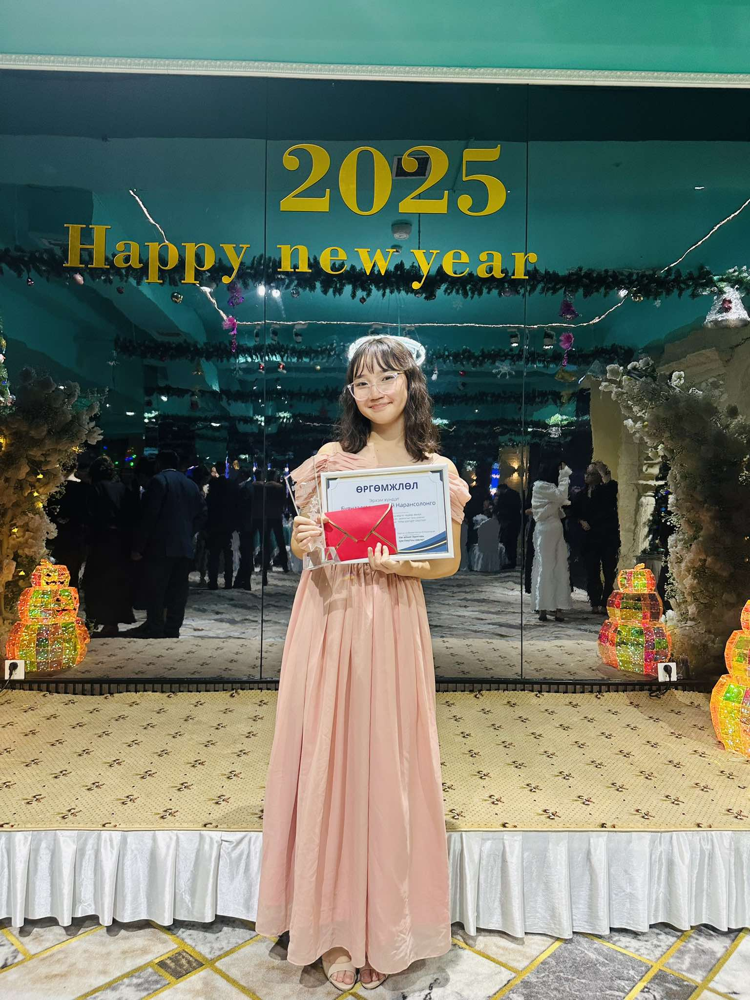
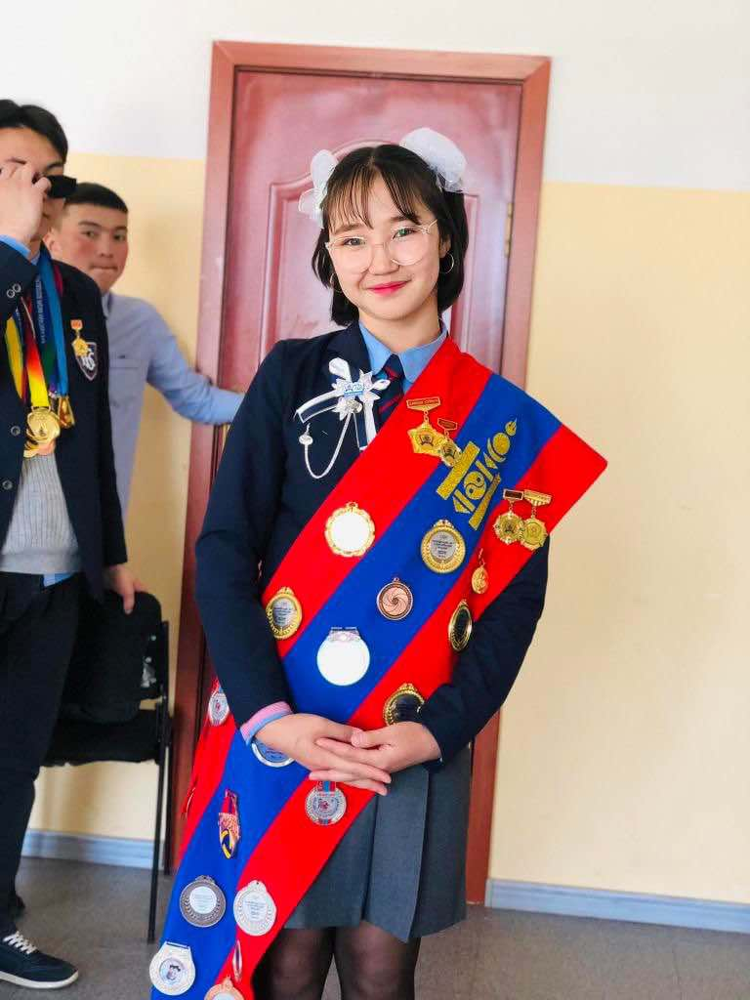
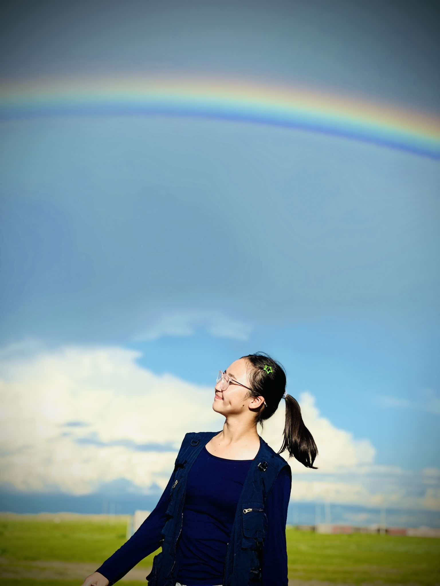
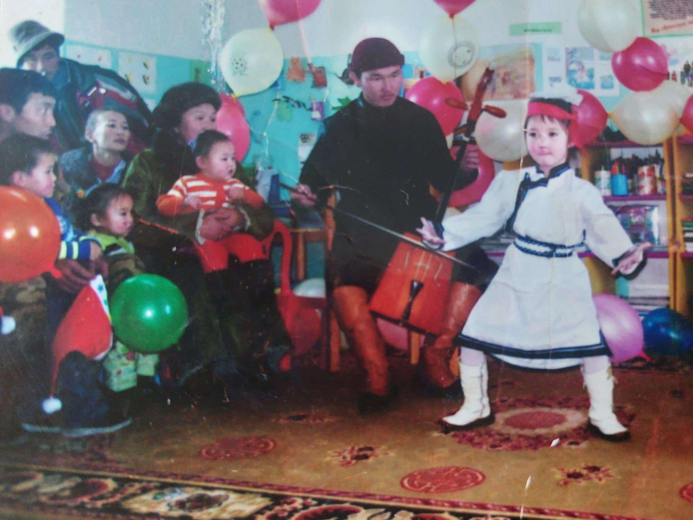

| Нарансолонго гэж хэн бэ? | ||
|
OTHER PAGES: |
Миний тухай факт  Нас-Хорьж болохгүй 20 нас Орд- Хумх Хобби-Зааланд тоглох, ном унших, унтах Олны танил краш - Амарсайхан начин Мэргэжил- Мэдээллийн технологиор сурч байгаа |

2005 оны 1-р сарын 20нд айлын дунд хүүхэд болон мэндэлсэн. |
| Миний талаар илүү ихийг дараагийн хуудаснаас үзээрэй ккк. | ||